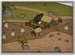

Requires
- Buildings: 
Enables
- Buildings:

Basic Building Statistics (can be modified by difficulty level, arts, skills, traits and retainers)
- Cost: 980
- +280 to wealth from farms in this province
- +1 per turn to town growth from commerce within this province
- Provides food: 1
- Enables the recruitment of cavalry in this province (assuming a cavalry-producing dojo is present)
Description
No horse goes willingly to battle.
Horses are vital to samurai warfare, and strong, brave animals are preferred as mounts. Samurai are horsemen, by tradition mounted archers first and foremost. The ability to ride is as important as any skill at arms. It was only during the Sengoku Jidai period that samurai habitually fought as infantry. For much of history "samurai" was a term synonymous with "cavalry" to the Japanese. A samurai was expected to fire his bow accurately from horseback. Given that shooting needed two hands, and the samurai had to stand up in the stirrups, this required the horse and rider to be superbly trained, as the man would have to control his mount only with his knees. A good horse, then, was highly sought after and highly prized. Not only did it have to be tractable and obedient, it also had to be quite hardy to survive on campaign. It is little wonder that horses were prized possessions, just as much as good armour.